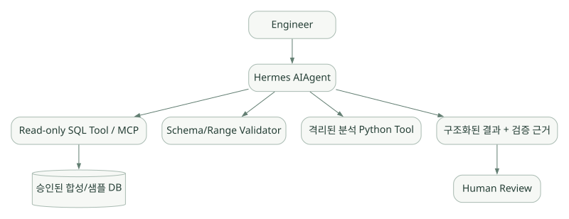

적용과 판단 / 단원 10
반도체 분석에 적용 판단하기
기능 개수보다 데이터 접근, 근거, 재현성과 검증을 먼저 본다
먼저 연결해 보기
Harness가 실행 기능을 갖추었다고 해서 반도체 데이터의 의미나 계산 결과까지 정확해지는 것은 아닙니다. 따라서 적용 여부는 기능 목록과 함께 데이터 접근 범위, 수치 검증, 근거 추적과 인간 검토를 기준으로 판단해야 합니다.
원문은 공정 테이블 분석, 기술 문서 질의응답, 설비 이상 분석 위임의 세 가지 가상 시나리오를 제시합니다. 아래 구성은 검증 완료된 제품이나 벤치마크 결과가 아닌 설계 검토입니다. 마지막 비교표를 이용해 다른 기술에서도 동일한 조건을 확인할 질문을 정리해 보세요.
읽는 관점기본 제공 기능과 직접 구현할 부분을 분리하고, 같은 모델·도구·데이터 조건으로 평가할 기준을 만드세요.
20. Hermes의 장단점과 기술적 적합성#
20.1 장점#
| 장점 | 근거 | 반도체 Agent에서의 의미 |
|---|---|---|
| 즉시 실행 가능한 Agent Harness | Agent Loop, Tool, Session, UI/게이트웨이가 기본 제공 S01, S02 | 기초 Harness를 처음부터 구현하지 않고 도메인 기능에 집중 가능 |
| 확장 가능한 Tool 구조 | Registry, Plugins, MCP S08, S12, S13 | 내부 데이터 조회·문서 검색 시스템 연결 가능 |
| 기억과 절차 분리 | Memory, Session Search, Skills S05, S06 | 일반 규칙, 재사용 작업 절차, 과거 이력 분리 관리 |
| 다양한 모델 공급자 | Provider Resolver, 3 API 모드 S03, S04 | 사내 LLM Gateway·외부 API 비교의 출발점 |
| Subagent 위임 | delegate_task와 출력 스키마 S14 |
서로 다른 분석 과제를 분리한 데모 가능 |
| 운영 기능 다수 내장 | Gateway, Cron, 승인, Checkpoint, 로그 등 S11, S17, S18 | 학습용 데모에서 실제 업무 형태를 빠르게 모사할 가능성 |
| 공개 소스와 상세 개발 문서 | 공식 저장소와 아키텍처 문서 S02, S20 | 내부 코드 분석·커스터마이징 가능 |
20.2 한계와 주의점#
| 한계/위험 | 구체적 내용 | 대응 방향 |
|---|---|---|
| 완성형 제품의 복잡성 | 기능·파일·상태가 많아 작은 데모에서도 시스템 이해 범위가 넓어짐 | 사용 기능을 최소 Toolset/Plugin으로 제한 |
| 자동 학습의 위험 | 잘못된 Memory/Skill이 재사용될 수 있음 | write_approval, 버전 고정, 검토 프로세스 |
| 출력의 도메인 정확성 미보장 | Harness가 있더라도 반도체 전문 지식·계산 정확성을 보장하지 않음 | 정답 데이터, 통계 검증, 인간 검토 |
| 대화 검색 방식의 제약 | 기본 FTS5 검색은 의미 검색과 다름 | 사내 RAG/MCP 검색 도구 별도 연결 |
| 기밀 데이터 및 자동 실행 리스크 | 셸/파일/외부 API 사용 권한 범위가 넓어질 수 있음 | 최소 권한, Sandbox, egress 통제 |
| Framework 간 비교의 어려움 | SDK보다 기본 제공 기능이 많은 Harness라 코드량·기본기능 비교가 비대칭 | '기본 제공'과 '직접 구현 필요'로 분리 비교 |
| 운영/모델 편차 | Tool Calling, API 모드, Model 호환성, 환경에 따라 동작 차이 | 고정 모델·동일 Tool·동일 데이터로 평가 |
| 개발 속도와 유지보수 상충 | Core fork 시 상위 프로젝트 변경에 따라 동기화 부담 | Core 수정은 최후의 수단으로 검토 |
위 장단점은 공식 기능·구조를 바탕으로 한 정성적 설계 평가다. 실제 설치 편의성, 성공률, 속도, 보안 수준의 우열은 실험하지 않았으므로 확정 평가하지 않는다.
20.3 어떤 상황에 적합한가?#
상대적으로 적합할 가능성이 높은 시나리오 [해석]:
- 파일/코드/검색/도구 실행이 섞여 있는 범용 분석형 Assistant
- 독립 서버에서 계속 실행되는 개인·팀 업무 Agent
- Agent의 메모리, Skills, Tools, Subagents 등 Harness 자체를 분석·연구하려는 목적
- 여러 모델·실행환경과의 연결을 비교하는 프로토타입
상대적으로 불리할 수 있는 시나리오 [해석]:
- 엄격한 고정 입력/출력 계약만 필요한 초소형 API
- 모든 상태 변화가 사전 정의된 DAG 및 결정론적 Workflow여야 하는 시스템
- 실행환경과 종속성을 극도로 제한해야 하는 폐쇄망 프로덕션 환경
- Agent의 어떤 도구도 임의 코드 실행 권한을 가지면 안 되는 규제/산업용 제어 환경
이런 경우 PydanticAI, OpenAI Agents SDK, Google ADK, Microsoft Agent Framework 같은 애플리케이션 개발 중심의 비교 후보와 함께 평가해야 한다. Hermes가 무조건 부적합하다는 결론은 아니다.
21. 반도체 Agent 데모 설계 시 고려사항#
21.1 권장 검토 원칙: 생산 제어가 아닌 '분석·설명'#
처음부터 장비 제어나 실시간 제어 의사결정을 자동화하지 않고 승인된 데이터의 조회·요약·시각화·근거 제시 수준에서 시작하는 것이 좋다. 실데이터 대신 샘플·합성 데이터로 구조 검증을 수행하고, 조직 보안정책을 적용한 뒤 내부 시스템 연결을 검토한다.
21.2 시나리오 A — 공정 테이블 데이터 분석#
가상 요구: "지난 7일간 센서별 측정값의 분포를 요약하고, 기준을 벗어난 경우를 설명하라."
넓은 도식은 가로로 스크롤하여 읽을 수 있습니다.

[예시] 원문의 가상 PoC 설계도입니다. Hermes의 기본 구성이나 검증 완료 시스템을 뜻하지 않습니다. 도식 크게 보기 ↗
연결 관계 원문 (Mermaid)
flowchart LR
U[Engineer] --> A[Hermes AIAgent]
A --> Q[Read-only SQL Tool / MCP]
Q --> DB[(승인된 합성/샘플 DB)]
A --> V[Schema/Range Validator]
A --> X[격리된 분석 Python Tool]
A --> O[구조화된 결과 + 검증 근거]
O --> H[Human Review]각 컴포넌트의 역할:
| 구성요소 | 책임 |
|---|---|
| System/Project Instruction | 목적, 단위, 응답 형태, 조작 금지 지침 |
| Skill | 표준 분석 절차, 데이터 품질·예외 처리 단계 |
| Read-only Tool | 데이터 집합 ID 기반 조회, 범위·컬럼·행 수 제한 |
| Code Execution | 허용된 통계 계산, 임시 파일/환경 격리 |
| Validator | 허용 컬럼·단위·수치·시간대/필터 검증 |
| Session Store | 질문과 추론에 사용된 Tool 실행 기록의 추적 |
| Output Formatter | 데이터 출처, 쿼리 해시, 기준, 분석 결과, 불확실성 분리 |
모델에게 계산 결과를 추측하게 하지 말고 계산은 Tool에 맡겨야 한다. 예를 들어 평균과 표준편차를 LLM의 문장 생성만으로 확정하는 대신, 검증된 계산 함수가 수치를 산출하게 해야 한다.
21.3 시나리오 B — 반도체 기술 문서 질의응답#
가상 요구: "이 검사 단계의 온도 허용 조건을 문서 근거와 함께 설명하라."
User question
→ Hermes chooses document_search tool
→ 사내 승인된 RAG/MCP 서버가 문서 검색
→ 문서 ID / 개정일 / 접근 권한 / 관련 발췌 전달
→ Hermes가 원문 대조, 출처와 불확실성 포함해 답변핵심 설계 조건:
- 문서 접근권한은 검색 서버에서 강제
- 구버전 SOP 및 승인되지 않은 초안은 우선순위 하향 또는 제외
- 답변에 문서번호·개정버전·발행일·근거 문단을 명시
- 충돌하는 기준을 하나로 임의 합성하지 않음
- 검색된 문서는 데이터이며 신뢰된 시스템 명령이 아님
기본 FTS5 session_search는 내부 기술 문서 전체를 검색하는 RAG 솔루션과 다르다. 문서 지식 저장소의 검색·색인·권한 모델은 별도로 설계한다.
21.4 시나리오 C — 설비 이상 분석 Multi-Agent#
가상 요구: "설비 로그와 검사 데이터에서 이상 원인 후보를 도출하라."
- Parent Agent: 목표·경계·작업 분해 및 최종 보고 통합
- Child A: 센서 데이터의 이상 패턴 요약
- Child B: 정비 이력/SOP에 대한 근거 검색
- Child C: 통계 검증 및 분석 코드 감사
- Human Reviewer: 승인/결론 검토
자식들은 같은 데이터의 서로 다른 복사본을 마음대로 수정하면 안 된다. 각 자식 Toolset을 읽기 전용으로 제한하고, 공통의 분석 입력 ID를 기준으로 수행하도록 설계한다. 부모에게는 근거·검증 결과·불확실성을 통일된 구조로 보고하게 한다.
가상 결과 스키마:
{
"dataset_id": "synthetic-demo-001",
"analysis_window": {"start": "2026-10-01", "end": "2026-10-07"},
"hypotheses": [
{"cause": "센서 편차", "evidence_ids": ["ev-001"], "status": "unverified"}
],
"constraints": ["측정 조건의 변동 요인을 추가 확인해야 함"],
"requires_human_review": true
}이는 사용자 설계 예시이지 Hermes가 기본으로 반환하는 스키마가 아니다. Hermes의 delegate_task(output_schema=...)와 검사 Tool을 이용한 구성 가능성을 검토할 수 있다. S14
21.5 개발 전에 결정해야 할 아키텍처 질문#
| 질문 | 결정에 미치는 영향 |
|---|---|
| LLM은 외부 API인가, 내부 GPU 서버인가? | Provider/API 모드, 네트워크 보안, 성능 |
| 데이터는 어디에 저장되는가? | MCP/API/DB Tool, 권한·감사·지연 |
| 생산 데이터가 외부로 전송될 수 있는가? | 허용 모델, 프록시, Memory/Plugin 사용 범위 |
| SQL을 모델이 생성해도 되는가? | Tool Schema, SQL allowlist, 승인 방식 |
| Python 코드를 실행해도 되는가? | Sandbox, 리소스 제한, 재현성 |
| 결과를 누가 검증하는가? | HITL, Validator, 보고서 계약 |
| 단일 Agent로 충분한가? | 단순성·복잡성·Subagent 비용 |
| 기록을 얼마나 보관하는가? | Session DB, 로그 보안, 삭제/보존 정책 |
| 모델/Skill 변경은 누가 승인하는가? | 변경 관리, 자기 개선 제어 |
| 실패했을 때 다시 실행해도 안전한가? | Tool idempotency, 중복 작업 방지 |
21.6 보안 중심의 초기 PoC 권장 구성 [해석]#
[분석 담당자]
│
▼
[Hermes CLI 또는 내부 인증 UI]
│
[단일 Agent, 제한된 Toolset]
├── 읽기 전용 MCP: 합성 측정 데이터
├── 읽기 전용 MCP: 공개/승인 문서
└── 격리된 통계 계산 Tool
│
▼
[검증된 JSON 결과 + 명확한 출처]
│
▼
[인간 검토 / 정적 리포트]초기 설정의 안전 경계 제안:
- 외부 네트워크 차단 또는 승인된 모델 엔드포인트만 허용
- 터미널/파일 쓰기 도구 비활성화, 필요 시 범위 제한
- Memory/Skills 자동 수정은 검토 승인 단계 사용
- 독립 프로필 및 테스트 전용
HERMES_HOME - 기밀 파일을 Skills/Memory/로그에 복제하지 않음
- 생산 DB 연결 금지; 샘플 DB의 읽기 전용 계정 사용
- 사고 발생 시 외부 서비스 취소·권한 폐기·로그 보존 절차 마련
22. 학습 결론과 다른 프레임워크 비교 준비#
22.1 Hermes에 대한 최종 평가#
Hermes의 가장 큰 학습 가치는 'Agent를 만드는 데 필요한 기능이 실제로 어떻게 결합되는지'를 완성형 오픈소스 시스템에서 보는 데 있다. Agent Loop만 따로 배우는 것이 아니라, Tool Registry, System Prompt, Memory, Session, Skills, Plugins, Provider Adapter, Gateway, 승인·보안이 하나의 실행 경로에서 어떻게 엮이는지 확인할 수 있다.
반면 이후 반도체 전용 Agent를 처음부터 애플리케이션으로 개발할 때 Hermes가 반드시 최선이라는 결론을 미리 내릴 수는 없다. 처음부터 갖춘 기능이 많다는 장점이, 운영/보안/버전 관리 복잡성으로 바뀔 수도 있기 때문이다.
22.2 이후 6개 비교에 넣을 항목#
| 비교 기준 | Hermes에 대한 현재까지의 학습 결과 | 다른 기술에서 확인할 내용 |
|---|---|---|
| 성격 | 완성형 Agent/Harness + 프로그래밍 통합 | SDK 중심인가, Harness 제공 범위는? |
| Agent Loop | AIAgent와 내부 Turn/Retry/Fallback |
반복 제어를 누가/어떻게 구현? |
| Memory | 파일 snapshot + FTS5 + 외부 Provider | 기본 Memory·RAG·DB를 제공하나? |
| Skills | 온디맨드 문서 절차, 관리 Tool/Curator | Skills를 기본 지원/확장 지원하나? |
| Tools | Registry + Toolsets + MCP + Plugin | Tool Schema/Validation/권한 경계는? |
| Multi-Agent | delegate_task 기반 동적 위임 |
명시적 Workflow/DAG/Handoff는? |
| Guardrails | 승인, 패턴 검사, 격리, Hook | 구조적 검증/정책/운영 안전 장치는? |
| State | SQLite Session, 프로필 분리 | Checkpoint/장기 실행/복구를 지원하나? |
| Model | 3 API modes + Provider Resolver | 공급자 종속성·교체 난이도는? |
| Observability | Callbacks/Session/Log/Trajectory | Trace·Metrics·Eval 도구는? |
| Deployment | CLI/Gateway/API/ACP/다중 백엔드 | 웹 서버 배포·폐쇄망 운영은? |
| Customization | Skill/Plugin/MCP/Core 수정 | 직접 작성 코드량과 결합도는? |
22.3 최종 핵심 개념 12문장#
- Hermes는 LLM 모델이 아니라 Agent Harness다.
AIAgent가 작업의 반복·도구 호출·종료를 담당한다.- Tool Call은 모델의 요청이고 실행 권한은 Runtime/환경이 결정한다.
- 내부 메시지를 공통 포맷으로 다루고 Provider별 Adapter가 API 형식을 변환한다.
Tool Schema는 모델이 호출 가능한 함수 계약이고 Handler는 실제 작업 코드다.Toolset은 관련 Tool을 묶어 노출 범위를 제어한다.MEMORY.md/USER.md는 항상 필요한 짧은 사실을 저장한다.session_search는 기본적으로 SQLite FTS5를 통한 과거 대화 검색이다.SKILL.md는 특정 유형의 작업을 반복하기 위한 절차 지식이다.- Hermes의 Self-improvement는 주로 지식·Skills 갱신/정리이지 모델 가중치의 자동 학습이 아니다.
delegate_task는 별도 Context를 가진 Child Agent에 작업을 맡긴다.- 반도체 Agent에서는 자율성보다 데이터 접근권한·근거·재현성·검증을 먼저 설계해야 한다.
22.4 이해도 확인 문제 및 모범 답안#
Q1. Hermes와 vLLM이 같은 종류의 제품이 아닌 이유는?
A. Hermes는 모델을 사용해 도구 실행과 대화를 관리하는 Agent Runtime이고, vLLM은 모델 추론 요청을 처리하는 모델 서빙 엔진이다.
Q2. AGENTS.md만 있으면 Agent의 모든 Instruction이 결정되나?
A. 아니다. 정체성, 시스템 메시지, 프로젝트 파일, Memory·Skills·Tool Schema 및 사용자 요청 등이 함께 영향을 준다.
Q3. MEMORY.md와 session_search 중 수주 전 대화의 정확한 발언을 찾는 데 적합한 것은?
A. session_search. Memory는 짧은 핵심 사실이고, 검색은 저장된 원본 대화 기록을 대상으로 한다.
Q4. Hermes는 왜 Skills 전체 본문을 매번 Prompt에 넣지 않나?
A. 토큰 비용과 불필요한 Context 점유를 줄이기 위해 목록을 먼저 제공하고 필요할 때만 문서를 열도록 하기 때문이다.
Q5. 모델이 'SQL DROP TABLE' 실행을 요청할 때 Tool Schema만으로 막을 수 있나?
A. 아니다. 서버·DB의 실제 권한 제한, 실행 정책, 승인, SQL 검증이 필요하다.
Q6. Hermes가 새로운 분석 절차를 저장했다면 LLM 파라미터가 변경되는가?
A. skill_manage를 통한 Skill 저장과 모델 가중치 학습은 별개다.
Q7. Tool과 MCP Server의 관계는?
A. MCP Server는 외부 Tool을 제공할 수 있고, Hermes는 MCP Client로 그 기능을 등록해 Agent가 호출할 수 있게 한다.
Q8. Subagent가 많을수록 분석이 무조건 좋아지나?
A. 아니다. 병렬 처리 이점이 있지만 비용, 품질 편차, 근거 통합, 권한 관리 문제가 증가한다.
Q9. 모델 API가 중단되었을 때 외부 Tool의 이미 발생한 부작용도 반드시 취소되나?
A. 아니다. API 중단과 외부 작업 취소·보상 트랜잭션은 별도로 설계해야 한다.
Q10. 반도체 PoC에서 Hermes를 사용할 경우 처음에 최소한 무엇을 검증해야 하나?
A. 데이터 외부 전송 여부, 읽기 전용 권한, Tool 호출 정확성, 근거·계산 재현성, 안전한 실패 및 로그 관리다.